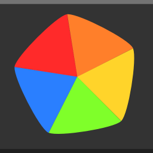

To download StreamJet for desktop or mobile (Android only), you can download the app through itch.io or the Amazon Appstore if you're on a Amazon Fire device.
Download StreamJet (itch.io)DOWNLOAD INSTRUCTIONS: To start using StreamJet on Windows. Download the installer (versions 1.2 and above) from the link above and run the installer. Once you do that and install StreamJet, you should be able to see it in your programs folder or on the Windows start menu. Although we'd prefer you use a newer version. You might want to use an older version, and that's fine. However, installing StreamJet is slightly more complicated. When you download StreamJet (1.1 and before), you'll see a .exe file in your Downloads folder. Move it to a folder of choice and then open it. If you open StreamJet in your Downloads folder and then move it to your desktop, it will not open. For mobile builds of StreamJet. Download the .apk from the site above and run the apk installer. Please remember to turn on "Install from unknown sources" in the Security tab of the Android settings. This does not apply for Amazon Fire devices as StreamJet is available on the Amazon Appstore
